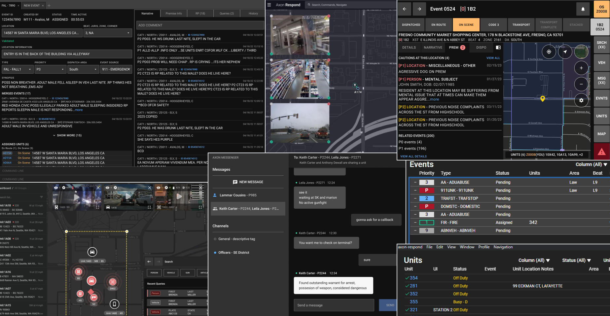
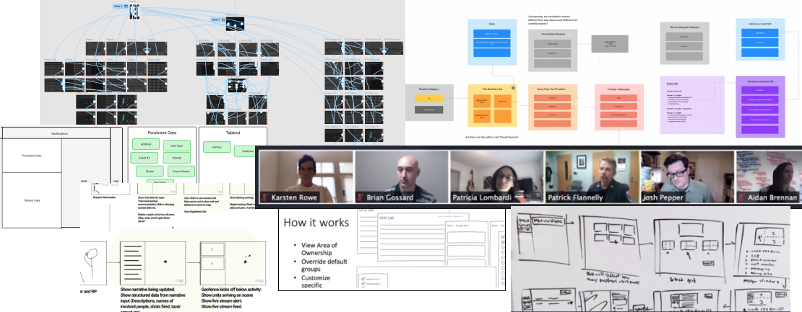
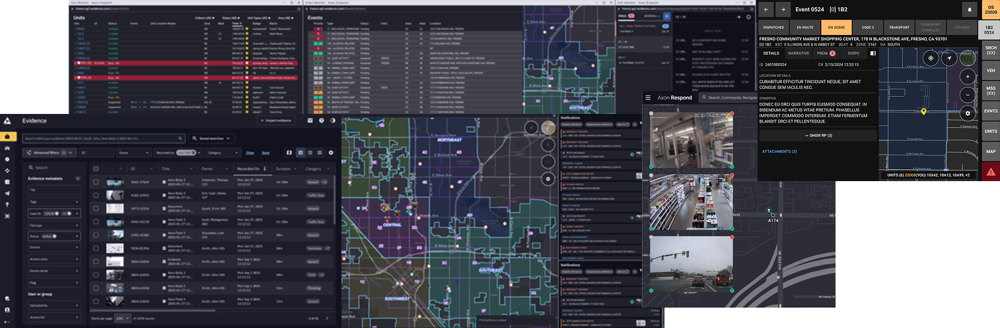

Engineering Response: Building a 0-to-1 Dispatch Ecosystem for Mission-Critical Environments
Overview
Sr Product Designer
2019-2024
Team
x Product Designers, 1 x UX Researcher, 10 x Product Managers, 60 x Engineers, 1 x Tech Writer
Squads
Signal, Incident Management, Map, Search, Communication, Integration, Admin
Context
Public Safety Answering Points (PSAPs) are high-stakes nerve centers where operational efficiency is measured in lives saved. At the core of this environment is Computer-Aided Dispatch (CAD)— the mission-critical engine used 24/7 to orchestrate emergency response. Axon identified a pivotal opportunity to disrupt this space by replacing fragmented, on-premise legacy systems with a unified, cloud-native ecosystem. This initiative was a foundational shift in public safety architecture, designed to eliminate the technical debt of legacy software while streamlining workflows for call takers and dispatchers. By prioritizing real-time data accessibility and seamless integration, we aimed to reduce response times and empower first responders with superior situational awareness.
The challenge: architecting a modern, intuitive experience that maintains absolute reliability in the most demanding environments on earth.
Problem Statement
Public Safety Answering Points (PSAPs) are facing an operational breaking point. Rising call volumes and chronic staffing shortages are exacerbated by fragmented legacy systems that require months of training and force dispatchers to juggle multiple siloed applications. This high cognitive load creates critical delays and information gaps, directly threatening agency funding and—more importantly—community safety.
Research & Discovery: Immersive Foundations

To design a system that survives the pressure of a 911 call, we moved beyond the lab and into the field. Our discovery phase was rooted in ethnographic research, spending weeks embedded with the Fresno Police Department. Through ride-alongs and sit-alongs, we distilled raw observations into actionable Jobs-to-be-Done (JTBD) and Experience Outcomes for each persona.
The Behavioral Challenge: Overcoming Muscle Memory
A primary hurdle was "Change Anxiety." Veteran dispatchers had spent decades perfecting muscle memory on legacy command-line interfaces. To them, the old system wasn't just software—it was a predictable tool they could operate eyes-free under extreme stress. We realized that our solution wouldn't just be competing with another product; it was competing with decades of ingrained behavior.
| Core Observation | User Friction Point | Strategic Design Goal |
|---|---|---|
| Ingrained Muscle Memory | Fear of losing the split-second speed provided by legacy Command Line Interfaces (CLI). | Keyboard-First Architecture: Integrated a powerful command line and custom hotkeys to match legacy velocity. |
| Cognitive Tunneling | High-stress environments cause users to lose focus on peripheral data and secondary windows. | Progressive Disclosure: Surfacing only mission-critical information during active calls to reduce sensory overload. |
| The "Monitor Wall" | Users manage 4–6 screens, leading to "lost cursor" syndrome and extreme context-switching fatigue. | Omni-Navigation: Designing seamless inter-window workflows that allow data to flow across monitors without manual re-entry. |
| Divergent Priorities | Dispatchers need extreme speed/input; Responders need exhaustive situational detail. | Persona-Specific Modality: Optimizing the dispatcher UI for "Time-on-Task" while the responder view focuses on "Context & Awareness." |

Ideation & Strategy: The Time on Task Framework
With a deep understanding of the dispatcher's "mental model," we moved into solutioning using a Time on Task (ToT) framework. Our objective was binary: the new system had to be more intuitive than the old one, but it could not be slower. To ensure this, we conducted performance benchmarking against legacy systems, establishing strict quantitative targets for critical workflows.
Orchestrating Efficiency
Our design strategy targeted two distinct layers of the user experience:
- Intra-Window Optimization: Streamlining micro-interactions within a single view to ensure that the most frequent actions—like call entry and unit status updates—required minimal ocular and physical effort.
- Inter-Window Fluidity: Reducing the "tax" of context-switching by optimizing how data moves across a multi-monitor setup, ensuring dispatchers never lost their place during high-priority incidents.
To measure success, we developed a comprehensive User Acceptance Testing (UAT) Matrix. This wasn't just a checklist; it was a performance tracker that mapped design iterations against our go-live benchmarks, ensuring every interaction was "field-ready."
Collaborative Iteration
Strategy was translated into execution through rapid, low-fidelity cycles. We facilitated co-design workshops and iterative wireframing sessions, involving engineering and stakeholders early. This collaborative "pressure-testing" allowed us to identify technical constraints around real-time data syncing early in the process, ensuring our final prototypes were both visionary and technically viable.
Design Execution: Refining for the High-Pressure Edge Case
As we transitioned from strategy into high-fidelity design, our focus shifted from "ideal paths" to "stress-case scenarios." We knew that a beautiful interface would fail if it couldn't be parsed in a split second during a multi-vehicle accident or an active pursuit.
Stress-Testing Interaction Models
Early prototype testing revealed that standard UI patterns often crumbled under the speed requirements of a veteran dispatcher. We pivoted our interaction models to prioritize non-linear task flows, allowing users to jump between call-taking and unit-dispatching without losing data. This led to a more modular layout that accommodated the "organized chaos" of a live dispatch floor.
Visual Ergonomics & Cognitive Hierarchy
In the final design phase, we applied a rigorous lens to visual ergonomics:
- High-Contrast Scannability: We utilized a high-contrast color palette and intentional whitespace to ensure that critical alerts (like "Officer Down" or "Weapon Present") were immediately distinguishable from routine status updates.
- Information Density vs. Clarity: We engineered a hierarchy that prioritized "at-a-glance" comprehension, using typography and iconography to draw the eye to the most volatile data points first.
- System State Transparency: In a mission-critical environment, the user must always know the system is "alive." We designed subtle but clear persistence indicators to maintain user trust in the cloud-native architecture.
Development & Engineering: Bridging Design with Mission-Critical Reality
Building a system where failure is not an option required a radical level of design-to-engineering synergy. Our collaboration was centered on the "99.99% Reliability Mandate," ensuring the UI remained performant and trustworthy even under extreme network volatility.
- Engineering the "Always-On" Experience: I led the UX effort to define Offline Mode capabilities, architecting a "Degraded State" strategy that prioritized core dispatch functions when connectivity was compromised. We mapped complex data-syncing behaviors to ensure no emergency data was lost during the transition back to the cloud.
- High-Fidelity Documentation & QA: To eliminate ambiguity, I moved beyond standard handoffs. We utilized annotated behavioral specs and logic flow diagrams that accounted for every edge case.
- The Continuous Feedback Loop: We established a "Live Design QA" rhythm—working side-by-side with developers to resolve performance bottlenecks in real-time. This partnership ensured that the high-density interface stayed responsive, maintaining the "sub-second" interaction speed required for public safety.
Impact & Results: Operational Success & System Adoption
The ultimate metric for this project wasn’t just the deployment of a new CAD system—it was the successful migration of a mission-critical operation without a single second of downtime. We measured success by the speed to proficiency and the reliability of the platform under live emergency conditions.
The Migration: Fresno PSAP Go-Live
During the high-stakes transition in Fresno, we operated on the front lines alongside call takers and dispatchers. This "on-the-floor" support allowed us to:
- Facilitate Real-Time Resolution: We addressed edge-case friction points instantly, ensuring that "change anxiety" was replaced by operational confidence.
- Maintain Operational Continuity: By providing live, rapid troubleshooting, we ensured the agency hit its federal response time targets from hour one.
Performance Benchmarking: Legacy vs. Cloud-Native
Post-launch data confirmed that our "Time on Task" framework delivered measurable gains. By benchmarking our solution against the previous legacy system, we validated:
- Workflow Optimization: Critical dispatch actions met or exceeded legacy speeds, proving that a modern UI could match the velocity of command-line muscle memory.
- Error Reduction: The focus on cognitive hierarchy and progressive disclosure led to a significant decrease in data-entry errors during high-priority incidents.
- Rapid Adoption: The intuitive nature of the design drastically shortened the onboarding curve for new staff, providing immediate relief to a stretched workforce.
Reflections & Future Horizons
Architecting a mission-critical system for public safety was as much a lesson in human psychology as it was in interface design. It reinforced that in high-stakes environments, design is a matter of operational trust.
What Prospered:
- Ethnographic Immersion: Deeply embedding with the Fresno PD was non-negotiable. Designing for this space requires an understanding of "stress-case" conventions that simply cannot be replicated in a lab.
- Quantifiable Benchmarking: By anchoring our goals in performance data rather than aesthetics, we moved the conversation from "Do you like this UI?" to "Does this help you save lives?" This was the key to overcoming legacy resistance.
- Concurrent Engineering: Partnering with developers from day zero ensured that our "99.99% uptime" goal was baked into the UI logic, preventing the friction of technical debt during the high-pressure launch.
Opportunities for Growth:
- Design as Change Management: I learned that in the public safety sector, the "product" is only half the battle. If I were to do it again, I would integrate training and onboarding strategy deeper into the design phase to further mitigate user "change anxiety."
- Scaling Beyond the Alpha: While our partnership with Fresno PD provided deep, high-quality data, I’ve realized the value of a broader "0 to 10" perspective. Engaging a more diverse range of PSAPs earlier would have allowed us to stress-test regional workflow variances before finalizing the core architecture.
Final Thoughts
We recognized that transitioning a police department to a new CAD system is as much about cultural trust as it is about technical performance. By prioritizing deep user empathy, rigorous real-world testing, and a commitment to continuous refinement, we successfully transformed skepticism into advocacy—building a foundation of long-term trust with the agencies we serve.
Other Axon Work
Fusus Core
Building on my initial work designing mission-critical workflows for patrol officers and dispatchers, I transformed a high-friction technical process into a scalable, user-friendly configuration experience for real-time crime centers. This focus on systems thinking and cross-functional collaboration resulted in a 60% reduction in support call volume and accelerated time-to-value for enterprise customers.

In-Car Patrol UX
Modernizing the Patrol Cockpit: Reducing Cognitive Load at 80 MPH I led the end-to-end redesign of the Axon in-car experience, transforming antiquated, distracting MDT software into a "glanceable," automation-first tactical asset. By prioritizing ergonomic safety and contextual intelligence, I helped first responders arrive on-scene faster and more informed, achieving a 94% user preference rating within the first month.